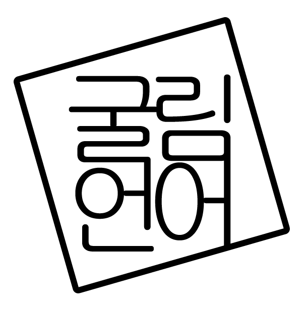

굴림
언어
프로
젝트
Gulim Language Project

한글로 된, 한국어 기반의, 굴림체로 쓰인
난해한 스크립트 프로그래밍 언어
New Esoteric Script Programming Language
in Hangul, in Korean, in Gulim
나랏말싸미 영어와 달라…
굴림언어는 형태소 분석을 이용한 한글/한국어 스크립트 프로그래밍 언어로서,
기존의 여러 ‘
난해한 프로그래밍 언어’들의 연장선상에서 행해지는 실험적 시도입니다.
본 프로젝트는 굴림언어 명세와 구현체의 제작을 포함합니다.
굴림언어가
굴림언어의 지향점
- 완전히 한글로 이루어진 언어
- 자연어로서의 한국어 문법 자체를 프로그래밍 문법으로서 반영하는 언어
- 하나의 코드가 프로그램으로서도, 문학으로서도 동시에 가치있을 수 있는 언어
- 튜링 완전(Turing-Completeness)한 언어
- 모든 한국어 화자가 읽고 쓰고 말할 수 있는 언어
- 코딩을 통한「굴림계획」의 일상적 실천
아름다운 굴림코드란?
- 기본적으로 말이 되는 코드
- 프로그램으로서 의미를 갖는 코드
- 굴림코드라는 것을 알아채기 힘든 코드
- 글꼴이 굴림으로 된 코드
잘 돼가요?
2015, 4월 23일
안 돼가요. 반 년동안 별로 진척이 없습니다.
왜냐면 불행하게도 개발자가 고3이기 때문입니다.
한가하게 개발이나 하다간 입시 경쟁에서 도태되어
밑바닥 진창에서 발버둥치다 비참한 최후를
맞이하게 될 가능성이 농후하기 때문에
본격적인 개발은 입시 문제가 마무리된 후로 하겠습니다.